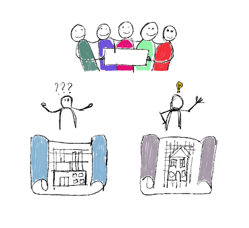

Geld bij elkaar krijgen, hoe doe je dat?
 Bij de gemeente kan je bij de aanvraag van het maken van een broedplaats een subsidie aanvragen. De gemeente heeft hier geld voor klaarliggen, alleen is het belangrijk dat je aan alle voorwaarden voldoet.
Bij de gemeente kan je bij de aanvraag van het maken van een broedplaats een subsidie aanvragen. De gemeente heeft hier geld voor klaarliggen, alleen is het belangrijk dat je aan alle voorwaarden voldoet.
Om in aanmerking te komen voor een kredietverlening uit het Triodos Broedplaatsenfonds Amsterdam moet met voldoen aan de onderstaande voorwaarden, afkomstig uit de overeenkomst tussen Triodos Bank en Bureau Broedplaatsen. Na een positieve beoordeling door de CAWA en de Triodos Bank wordt door de bank aan de initiatiefnemers een kredietovereenkomst aangeboden met een aantal opschortende voorwaarden. Deze zie je hier.
Verder kan je ook aanspraak maken op subsidie die duurzame plannen voor de stad zijn bevorderen. Energie Koplopersfonds is daar één van. Voor plannen voor energiebesparing en/of energieopwekking in Amsterdam ondersteunen zij projecten in Amsterdam. Kijk eens op hun website!
Zo is er ook bij de gemeente Amsterdam een subsidie om een duurzaam project op te starten. Je kunt de subsidie Ruimte voor duurzaam initiatief aanvragen voor de voorbereiding van een complex duurzaam project. Of voor het opzetten van een duurzaam programma. Samen met buren, via een organisatie of stichting, of alleen. Zolang het maar bijdraagt aan een gezonde, schone of klimaatadaptieve stad. Klik hier voor de website.
En om nog een toe te voegen op de lijst, de Stichting Gezonde Stad wil Amsterdam duurzaam en gezond maken. Dit doen zij door samen met Amsterdammers en andere koplopers uit de stad projecten en events te starten en duurzame initiatieven te ondersteunen. Hier zou je dus ook aan kunnen kloppen voor ondersteuning van je circulaire broedplaats. Zie hier